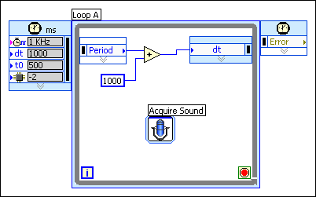
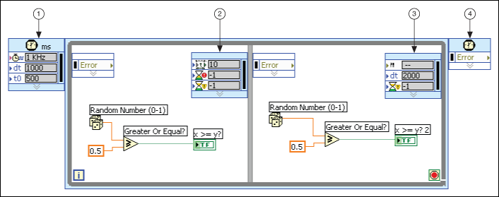

Use the Right Data node of a frame to dynamically set the input values for the next frame of a timed structure or to set the input values for subsequent iterations of a Timed Loop.
|
Note��(NI Linux Real-Time) National Instruments recommends interactively changing timed structure priority levels. Dynamically changing timed structure priority levels can decrease performance. |
Use the Right Data node of a Timed Loop or the Right Data node of the last frame of a Timed Loop with frames to set the configuration options for the next iteration of the loop. The Timed Loop in the following block diagram uses the Period input of the Right Data node to configure the loop to run one second (1,000 ms) longer each time the loop iterates.

|
Note��If you dynamically change the offset of a Timed Loop by wiring a value to the Offset input of the Right Data node, you also must specify a mode with the Mode input of the Right Data node. |
You also can use the Right Data node of a frame to change the configuration options of the next frame dynamically. The Timed Loop in the following block diagram includes two frames�A and B. The Input node (1) configures the initial execution of the Timed Loop and the options of the first frame. The Right Data node of the first frame configures the options of second frame. The Right Data node of the second frame configures the options of the first frame and the next loop iteration.

| 1 | Input node |
| 2 | Right Data node |
| 3 | Right Data node |
| 4 | Output node |